By Scott Selfon, Audio Content Consultant
Xbox Advanced Technology Group
The Xbox Audio Creation Tool (XACT) abstracts several hardware settings to make it easier to manage and mix sounds that it plays. In this paper, we will attempt to "reconnect" XACT to the Xbox audio hardware and explain what XACT authored and programmed settings are transparently doing to the underlying audio hardware. Specifically, we will discuss how sounds expose some of the voice processor properties to content creators. And we will focus on uses for the various kinds of sound sources, as well as how audio is routed when custom sound sources are used.
Before discussing the various features of the voice processor, it might be most useful to discuss volume attenuation and how it is handled in XACT versus DirectSound. XACT defaults to set per-mixbin headroom to zero, unlike the 6 dB default in DirectSound. The philosophy here is that the sound designer or composer has more complete control over all volume settings than in DirectSound, so most non-game-driven attenuation decisions are placed in their control. But this does effectively mean that a sound played in XACT will, by default, be twice as loud as one played in a title that only used DirectSound (without modifying the mixbin headroom setting). If you mix and match DirectSound and XACT within a single title, the mixbin headroom is shared by both, so both XACT and DirectSound would have zero mixbin headroom.
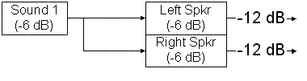
Illustration The DirectSound defaults for voice headroom (6 dB) and mixbin headroom (6 dB) attenuate all sounds by 12 decibels.
Illustration By comparison, XACT defaults to a mixbin headroom of zero decibels, so sounds are only attenuated by the per-voice headroom of 6 decibels by default.
Per-voice headroom does remain enabled by default, if only to assist the content creator in building some headroom to avoid clipping. A content creator can choose to disable this setting on a per-sound basis via the 6 dB gain boost option. Do note that, as with DirectSound, the HRTF processing performed on 3D voices adds roughly 6 dB of attenuation that cannot be removed, so they can never get much louder than -6 dB full scale. Also note that with the gain boost option checked, the process of playing very few sounds (or several instances of a single sound) is more likely to result in clipping. Monitor the output levels (via the Audio Console Application or the Audition Monitor in the XACT authoring tool) closely to avoid this.
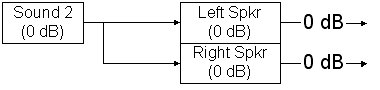
Illustration When the 6 dB gain boost option is enabled on a sound, the voice headroom is removed, and the sound plays effectively unattenuated (but, if any other sounds are playing, with the increased possibility of clipping). Again, note that on a 3D positioned sound, HRTF processing still effectively attenuates such sounds by roughly 6 dB.
XACT also exposes the full range of per-voice properties for the content creator. Each voice has a programmable filter block that can be used for DLS-2 low pass filtering, a band of parametric EQ, or in the case of 3D voices, I3DL2 occlusion/obstruction filtering. The first two can be controlled by the content creator, while the latter is controlled dynamically by the programmer. DLS-2 low pass filtering involves the use of a Low Pass Filter event, which allows the content creator to establish resonance and cutoff frequency (with sweep or randomized settings). The filter can also be modulated with a six-stage envelope (via a Pitch and Filter Envelope event) or using the per-voice LFOs (Multifunction LFO event). Parametric EQ consists of separate controls for gain, Q, and frequency, which are available as properties on a sound (in the Mixer properties). Note that using both parametric EQ and DLS-2 requires that a voice be mono; stereo and multichannel sounds can use only one or the other.
We've already mentioned the multifunction envelope event, but each voice also has a second six-stage envelope dedicated to volume (amplitude) over time. This Amplitude Envelope event allows the content creator to control delay, attack, hold, decay, sustain, and release. The release envelope is triggered whenever a sound is told to stop, unless that stop is immediate. The former includes stop events authored into the sound, or programmatic stops via IXACTSoundBank::Stop that don't use the XACT_FLAG_SOUNDCUE_IMMEDIATE flag. The latter includes any immediate programmatic stops: IXACTSoundBank::Stop using XACT_FLAG_SOUNDCUE_IMMEDIATE or IXACTSoundSource::StopSoundCues.
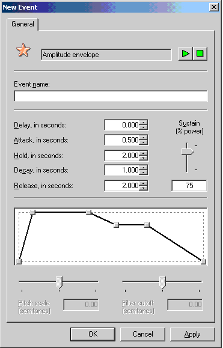
Illustration A sound that uses this volume envelope will fade in over .5 seconds (attack), hold at full volume for 2 seconds (hold), then fade over 1 second (decay) to 75% volume (sustain). It will remain at this volume until it is told to stop, at which time it will fade out over 2 seconds (release).
An XACT cue can be played onto one of several kinds of sound sources-the default sound source, a 2D sound source, or a 3D sound source. Which sound source is used is determined at run time by the programmer. The easiest way to determine which kind of sound source is appropriate is to query the cue (via the dwFlags field returned by IXACTSoundBank::GetSoundCueProperties) to see if it has been authored with 3D settings. Alternatively, the programmer can work with the composer/sound designer to define these settings ahead of time.
The default sound source is typically used for multichannel sounds, as well as other sounds that will not need any programmer-controlled positioning. Under the hood, the default sound source plays voices directly into the appropriate Voice Processor mixbins; no MIXIN buffer is used. The diagrams in the previous section all illustrated sounds played onto the default sound source. By default, the waves that a sound plays will be routed to their "standard" mixbins-that is, mono and stereo waves will play onto the left and right speaker mixbins; four-channel waves will use the four directional speakers (left, right, left surround, right surround); and six-channel waves will use all six directional speakers. If custom effects are being used, or if the composer/sound designer otherwise wants to specify which mixbins to play a sound onto, they use a MixBin event or a MixBin Pan event.
MixBin events tell a particular track of a sound what speakers it should play on. You can sequence multiple events over time, though typically just a single event is used to set up a track. Note that with multichannel tracks, mixbin assignments cycle through the available channels, and you must supply a multiple of the number of channels in the wave. For instance, if we had a stereo wave, and in addition to playing it through the left and right speakers, wanted to mix both channels into the center speaker, we would create a MixBin event that looks like this:
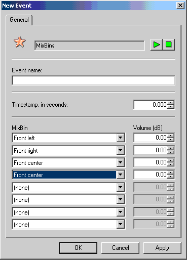
Illustration A MixBin event for routing a stereo wave to the center speaker as well as the left/right speakers.
Note that we had to send to the center speaker twice—once for the left channel, and once for the right channel. When using the default sound source, you can send to up to eight mixbins per track.
As an alternative, you can position sounds in 3D space by using a MixBin Pan event. Unlike true 3D positioning using a 3D sound source, there is no HRTF processing occurring. However, you are also not using any additional voices, nor are these sounds counting towards the limit of 64 concurrent 3D sound emitters. MixBin Pan events are actually just a different presentation of MixBin events; the angle is translated into volumes sent to the various speakers.
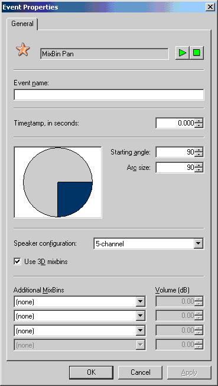
Illustration A MixBin Pan event that randomly positions a sound between the right of the listener and behind the listener (blue area on the circle).
Let's talk briefly about some of the MixBin Pan event options just to clarify them. As with programmer-created sound sources, you can specify whether this event will pan between four speakers (left, right, left surround, right surround) or all five main speakers (add the center). The Use 3D mixbins check box specifies whether this sound should go to the main speakers (unchecked), or be routed to the crosstalk mixbins, where they will be mixed with all of the "true" (HRTF) 3D-positioned sounds and crosstalk cancelled before going to the main speakers. For more information on the crosstalk effect, see the white paper Authoring and Auditioning Effects Programs.
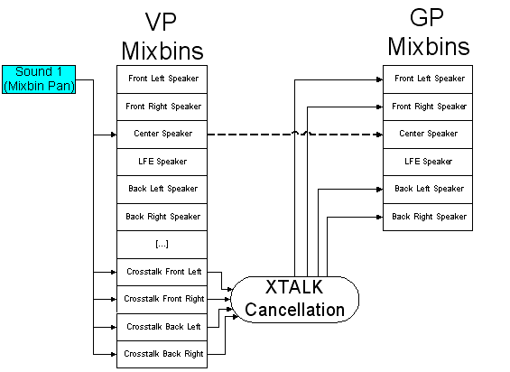
Illustration When Use 3D mixbins is checked, the sound is routed to the crosstalk mixbins. After being processed by the crosstalk cancellation effect, the output is sent to the appropriate speakers. As there is no special crosstalk mixbin associated with the center channel, that aspect of the sound is just directed to the center mixbin, which passes through to the center speaker.
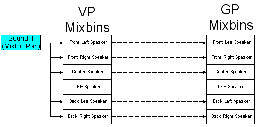
Illustration When Use 3D mixbins is unchecked, the sound is routed directly to the speaker mixbins, which typically pass through the DSP effects image directly to the speakers.
You can also specify additional sends to round out the eight that are supported per voice, which is why three Additional MixBins rows are enabled when using a 5-channel pan versus all four additional mixbins being enabled when the 4-channel option is chosen. For MixBin Pan events, a send to the LFE and/or the I3DL2 reverb mixbins is common.
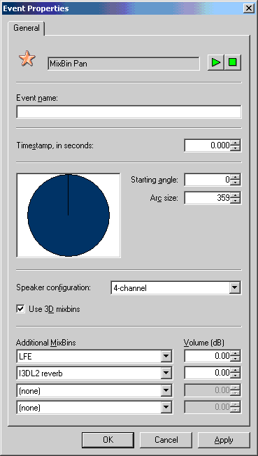
Illustration Typical Additional MixBins used for a MixBin Pan event. This sound will be randomly panned through the four directional speakers, be sent to the LFE channel (automatically low-pass filtered by the Xbox hardware), and also be processed by the environmental reverb.
When you create your own sound source, whether 2D or 3D, you are effectively creating a MIXIN buffer that sounds will play onto. Sounds played onto a custom sound source are submixed, as described in the white paper Chaining, Submixing, and Multipass Effects. 3D sound sources are of course used for sounds that you intend to 3D-position; we will cover common 2D sound source uses in a moment. It is perfectly acceptable (and indeed encouraged) to have more than one sound playing onto a single 3D sound source. When a single 3D sound emitter might make several sounds at once, it saves 3D voices (and associated CPU calculations) to submix them into a single 3D voice that is positioned. XACT performs all rolloff/attenuation calculations internally, so multiple sounds with different attenuation characteristics can be played onto a single 3D sound source. Do note that by virtue of being 3D-positioned, all sounds played onto a 3D sound source are downmixed to mono.
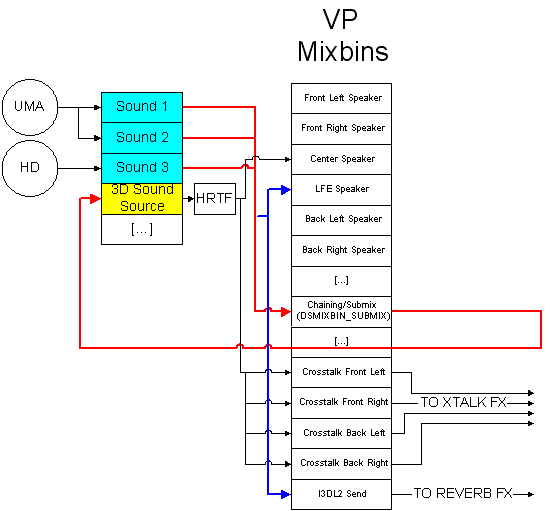
Illustration A 3D sound source (yellow) with three sounds (blue) playing onto it. If any of the sounds were stereo, both channels are sent to the submix mixbin, where they are mixed with the other sources into a mono buffer that the sound source reads from (red arrows). Sounds played onto 3D properties also send to the LFE and I3DL2 Send mixbins (blue arrows), with independent volume control.
In the properties for a 3D sound, you've probably noticed the I3DL2 and LFE send levels. These are actually additional mixbins to which XACT automatically routes sounds when they are played onto a 3D sound source. Note that these auto-sends are functional only for mono waves; multichannel waves will require mixbin events to route them properly to the I3DL2 and LFE mixbins. Keep in mind the eight mixbin limit per voice; the SUBMIX mixbin does count for one of the eight mixbins per channel of the sound. So a four channel sound will have four mixbins left to route as you see fit (which would not be enough to send all four channels to both the I3DL2 and LFE mixbins).
By default, 3D sound sources in XACT use 5-speaker (left, center, right, left surround, and right surround) panning, whereas in DirectSound, the 4-speaker (left, right, left surround, and right surround) pan was the default. 4-channel panning can easily be selected by the programmer by using IXACTSoundSource::SetMixBins with the DSMIXBINVOLUMEPAIRS_DEFAULT_3D mixbin constant.
2D sound sources are used much less frequently than the default sound source or custom 3D sound sources. Typical scenarios include:
Because of their most typical use as non-HRTF 3D positioning, 2D sound sources default to route to all six speakers as well as sending to the I3DL2 reverb. Note that without mixbin (IXACTSoundSource::SetMixBins) or mixbin volume (IXACTSoundSource::SetMixBinVolumes) adjustments, 2D sound sources may be quite a bit louder than the default or 3D sound sources.
2D sound sources should not typically be used for the playback of multichannel source material, because the sound source mixes all sounds played on it down to mono. In addition, if these sounds use MixBin events or MixBin Pan events, both the content creator and the programmer are effectively controlling the mixbin routing. This can produce some unexpected results: the content creator is managing the mixbins to which the source voices are routing, while the programmer can be adjusting the mixbins to which the sound source is sending. Even if the programmer never adjusts the sound source's mixbins, there's still a (probably unintended) path that the audio is following, as illustrated in the example below.
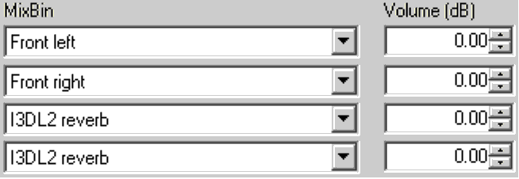
Illustration A sound designer authors a stereo sound and wants to add reverb to it, the designer creates a MixBin event that sends it to the main speakers along with the I3DL2 reverb. (Remember that there are separate, alternating sends for each channel of the stereo wave, hence the two "I3DL2 reverb" entries.)
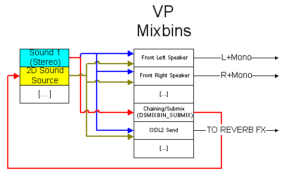
Illustration The result of playing the previous illustration's sound onto a non-default 2D sound source. Both channels of the sound are routed to the SUBMIX mixbin, where the sound source reads from it (red arrows), creating a mono downmix. The sound source then plays the downmixed sounds onto its default output mixbins (dark yellow arrows), which include the front left and front right speaker mixbins, the reverb mixbin, and (not shown) the center and surround speaker mixbins as well. Meanwhile, the sound's MixBin event routes some of the sound's remaining outputs to I3DL2 reverb as well as the front left and front right speakers (blue arrows), creating unintended double mixing in both the speakers and the reverb input. The sound played through the main speakers will most likely play roughly twice as loud as authored, and will lose any strong left-right panning with the mono downmix being played to both speakers.
There are certainly some scenarios where the above behavior might be desired; that is, the programmer specifies particular mixbins for a sound source to use, but certain sounds played on that sound source should send to additional mixbins. For instance, getting back to the sports PA announcer scenario, we might want all dialog to go to the center channel, but some lines also have chorus or a secondary reverb applied to them. In this scenario, all dialog could be sent to a 2D sound source directed toward the center speaker mixbin. Meanwhile, sounds that need the extra effects applied would be authored with a MixBin event that would send them to particular effect inputs.
Typically, a programmer should play 3D sounds onto 3D sound sources, and non-3D (2D) sounds onto the default sound source, or possibly a 2D sound source. A programmer can detect cues that have their 3D property enabled via IXACTSoundBank::GetSoundCueProperties, specifically by looking at the dwFlags member of XACT_SOUNDCUE_PROPERTIES. If in some scenarios, you do decide that you want to mix and match 2D and 3D sounds and sound sources, the following table details some of the expected default behaviors.
| Default Sound Source | 3D Sound Source | 2D Sound Source | |
|---|---|---|---|
| Non-3D sound | Normal playback | Uses all DirectSound default 3D properties; sent to I3DL2 and LFE mixbins at full volume (unless sound has a MixBin or MixBin Pan event) | Sent to all 5.1 speakers and I3DL2 at sound source's specified volumes (full by default) |
| 3D sound | All 3D properties ignored (including I3DL2/LFE send levels) | Normal playback | Sent to all 5.1 speakers and I3DL2 at sound source's specified volumes (full by default); all 3D properties ignored (including authored I3DL2/LFE send levels) |
We hope this document provides a clearer guide to audio signal routing when using XACT. Remember that the programmer exerts full control over the custom sound sources they create, while the content creator can direct sounds played onto the default sound source to whatever speaker configuration they wish. Custom sound sources (2D or 3D) should not typically be used to play sounds that have authored MixBin or MixBin Pan events, unless a mixture of signal paths as described above is desired. As always, if you have any questions, concerns, or comments about XACT or other Xbox tools, please contact content@xbox.com.
For more information about topics presented here, please consult the XACT chapters of the Xbox Audio Best Practices Guide, the Xbox Development Kit Help documentation, or the white papers in the Audio Designer's Corner, or send an e-mail message to content@xbox.com.